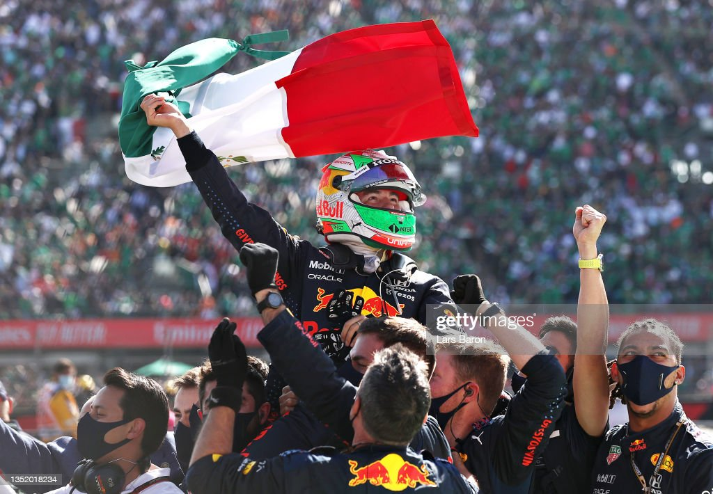

| # | PILOTO | PUNTOS | VICTORIAS |
|---|---|---|---|
| 1 | Max Verstappen | 229 | 7 |
| 2 | Sergio Perez | 148 | 2 |
| 3 | Fernando Alonso | 131 | 0 |
| 4 | Lewis Hamilton | 106 | 0 |
| 5 | Carlos Sainz | 82 | 0 |
| 6 | Charles Leclerc | 72 | 0 |
| 7 | George Russell | 72 | 0 |
| 8 | Lance Stroll | 44 | 0 |
| 9 | Esteban Ocon | 31 | 0 |
| 10 | Lando Norris | 24 | 0 |
| 11 | Pierre Gasly | 16 | 0 |
| 12 | Nico Hulkenberg | 9 | 0 |
| 13 | Alexander Albon | 7 | 0 |
| 14 | Oscar Piastri | 5 | 0 |
| 15 | Valtteri Bottas | 5 | 0 |
| 16 | Zhou Guanyu | 4 | 0 |
| 17 | Yuki Tsunoda | 2 | 0 |
| 18 | Kevin Magnussen | 2 | 0 |
| 19 | Logan Sargeant | 0 | 0 |
| 20 | Nyck De Vries | 0 | 0 |
Resumen Fórmula 1 2023
La temporada de F1 2023 consta de 22 carreras y se inició con el Gran Premio de Australia. La temporada ha visto una gran actuación de Max Verstappen, quien ha ganado siete carreras consecutivas. Fernando Alonso ha estado compitiendo con Aston Martin AMR23 y Sergio Pérez ha tenido éxito en Red Bull Racing. En el calendario se incluye una nueva sede en Miami, EE. UU. Max Verstappen ha tenido una gran actuación y ha ganado siete carreras consecutivas, mientras que Fernando Alonso ha estado compitiendo con Aston Martin AMR23 y Sergio Pérez ha tenido éxito en Red Bull Racing. Además, existen detalles sobre los nuevos coches y pilotos para la temporada, como el Alfa Romeo C43 de Valtteri Bottas y Guanyu Zhou , el McLaren MCL60 de Lando Norris y Oscar Piastri , y el RB19 de Sergio Pérez. También se ha presentado un nuevo formato de carrera sprint.
Posiciones
1- Gran Premio de Bahréin:
Comienzo soñado de temporada para Red Bull con un doblete encabezado por Max Verstappen. Fernando Alonso cumplió las mejores expectativas con un podio, el cual le era esquivo desde Qatar 2021. Sainz cruzó meta en cuarto lugar en un abandono de Leclerc por un problema eléctrico. Quinto Hamilton por delante de un Stroll que se ha recuperado en tiempo récord. Russell, Bottas, Gasly y Albon completan la zona de puntos, con Zhou llevándose la vuelta rápida pero quedándose sin punto.
2- Gran Premio de Arabia Saudí:

Doblete de Red Bull con victoria de Sergio Pérez, escoltado por Max Verstappen que ejecuta una gran remontada desde la decimoquinta posición. Fernando Alonso completa otra sólida carrera cruzando meta en tercera posición y celebrando un podio que luego le sería arrebatado a favor de George Russell por no cumplir cinco segundos de sanción durante la parada en la vuelta 19. Sainz finaliza sexto, por delante de Leclerc, por detrás de los Mercedes. Cinco horas después de finalizar la carrera y con Aston Martin ejerciendo su derecho a revisión, la FIA anula su sanción al no quedar demostrado que el equipo verde "trabajase" en el vehículo de Fernando Alonso, recuperado el asturiano su podio número 100.
3 - Gran Premio de Australia:
Caos en Albert Park en una carrera con tres banderas rojas, una correción de posiciones y un final bajo coche de seguridad. Verstappen se lleva una nueva victoria, la 37 en su carrera deportiva. Primer podio del año para Lewis Hamilton con un W14 que ya no parece tan poco competitivo. Tercer podio de Alonso, de nuevo en tercera posición. Carlos Sainz acaba fuera de los puntos tras recibir una sanción en el periodo de coche de seguridad tras golpear a Fernando Alonso en la tercera resalida, cuyos resultados fueron revertidos posteriormente. Positiva cita para McLaren, que suma puntos con sus dos pilotos. Leclerc queda fuera de carrera en la primera vuelta, y Russell, que llegó a liderar, sufrió una rotura de motor.
4 - Gran Premio de Azerbaiýan:
Segunda victoria del año para Sergio Pérez que sacó provecho de la aparición del coche de seguridad para coger un liderato que luego Max Verstappen no pudo arrebatarle. Charles Leclerc no tuvo rendimiento para meterse en la batalla de los Red Bull pero sí para sumar su primer podio del año a pesar de que un gran Fernando Alonso remontó y acabó atacando al monegasco, cruzando meta a menos de un segundo. Quinta posición para Carlos Sainz que pudo contener a Lewis Hamilton, quien perdió demasiadas posiciones por el coche de seguridad.
5 - Gran Premio de Miami:
Tercera victoria de Max Verstappen esta temporada que remonta desde la novena posición, doblegando a Checo Pérez quién comenzaba desde la pole position. Cuarto podio del año para Fernando Alonso, que mostró más ritmo que los Mercedes y los Ferrari. Sainz se tuvo que conformar con el quinto puesto a pesar de una sanción por exceder velocidad en boxes y que afortunadamente quedó sin efecto.
6 - Gran Premio de Mónaco:

Brillante victoria de Max Verstappen en un Mónaco que empezó seco y terminó con lluvia sin interferencias del coche de seguridad. Quinto podio para Fernando Alonso, que con un segundo puesto suma su mejor resultado del año, y que por primera vez pudo luchar realmente por una victoria. Completó el podio Esteban Ocon, haciendo buena la posición de salida y logrando el tercer podio de su carrera deportiva. Carlos Sainz tuvo mala fortuna con la estrategia y con un roce con los muros, conformándose con un octavo lugar. Sergio Pérez no puntuó.
7 - Gran Premio de España:
Grand Chelem de Max Verstappen que da buena tinta de cómo de dominante ha sido su fin de semana. El neerlandés estuvo escoltado en el podio por los Mercedes, que han dado un gran salto adelante. Sabor agridulce para Carlos Sainz que tras salir segundo tuvo que confirmarse con el quinto puesto. Fernando Alonso no tuvo el ritmo de otras pruebas y tuvo que conformarse con la séptima posición. Carrera sin abandonos.
8 - Gran Premio de Canadá:
Sexta victoria de la temporada para Max Verstappen que estuvo acompañado en el podio por Fernando Alonso, segundo, y Lewis Hamilton, tercero, reuniendo a los campeones del mundo de Fórmula 1. Positiva remontada de Carlos Sainz que suma su cuarto quinto puesto en la presente temporada. Alex Albon suma el mejor resultado del año con un séptimo puesto, mientras que George Russell, que golpeó el muro, tuvo su segundo abandono del año.
9 - Gran Premio de Austria:
Máximo de puntos posible para Max Verstappen, con doble victoria y punto por vuelta rápida, en un fin de semana en el que no ha tenido rival y que significa el quinto triunfo seguido y séptimo de nueve posibles. Carlos Sainz luchó por el podio pero se vio perjudicado por una mala elección en los periodos de parada. Fernando Alonso cruza meta sexto, ascendiendo al quinto puesto por las sanciones postcarrera, tras Lando Norris en lo que ha sido el mejor resultado de McLaren de la temporada.